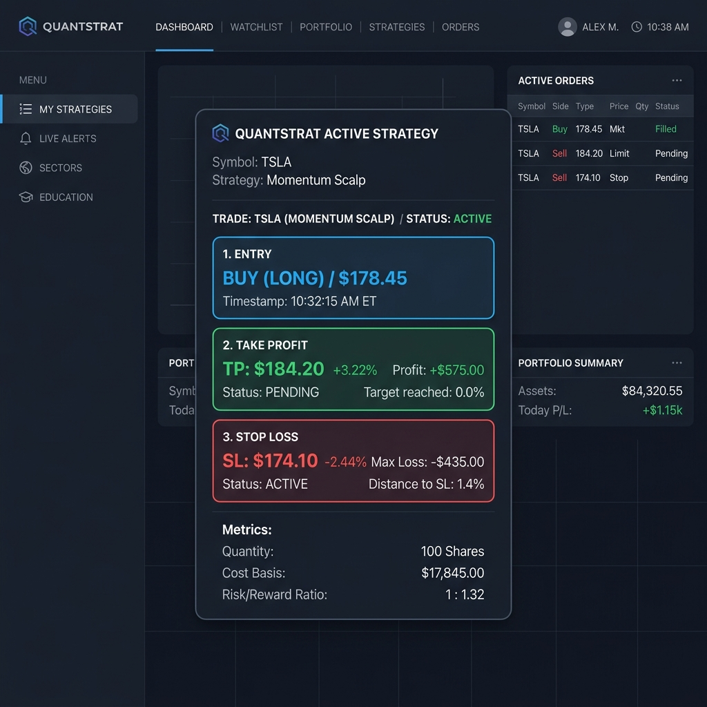

Background
Retail stock investors often fall victim to emotional trading, particularly when executing short-term swing trades or BSJP (Beli Sore Jual Pagi) strategies on the Indonesian Stock Exchange (IDX). They rely on scattered, unstructured chat-bot outputs which fuel intuition over logic.
I built Aura to be a hyper-logical, risk-averse Lead System Architect & Quantitative Analyst. She speaks in technical certainties and outputs structured data, completely removing conversational fluff and emotional bias from trading.
Challenges: Combating Emotional Trading
Emotional Bias
Investors make irrational decisions based on market panic or hype. They need cold, hard quantitative limits (Entry, Take Profit, Stop Loss).
Unstructured Data
Standard LLMs output paragraphs of text which are hard to parse quickly during fast-moving trading hours.
Delayed Analysis
Flipping between Yahoo Finance, charting tools, and ChatGPT takes too long for BSJP strategies where minutes matter.
The Solution: Agentic RAG Workflow
Aura is built on an agentic RAG workflow. Instead of acting as a standard chatbot, she pulls live market data via RapidAPI behind the scenes, analyzes it using Google's Gemini 3.1 Pro, and enforces a strict JSON output schema.

Architecture & Technologies
Aura uses a Vercel-optimized Monorepo to maintain security and performance, bridging a frontend SPA with serverless backend functions.